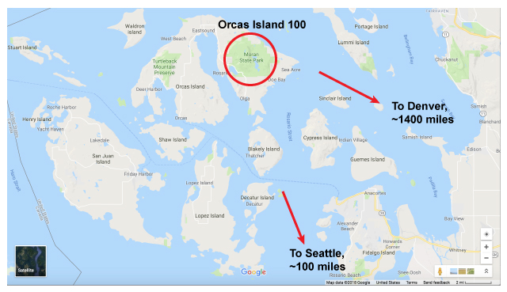
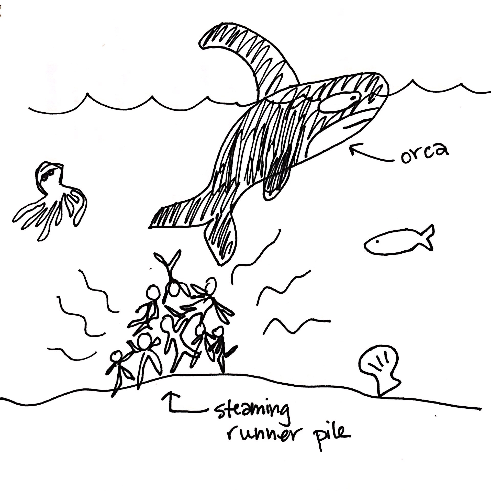
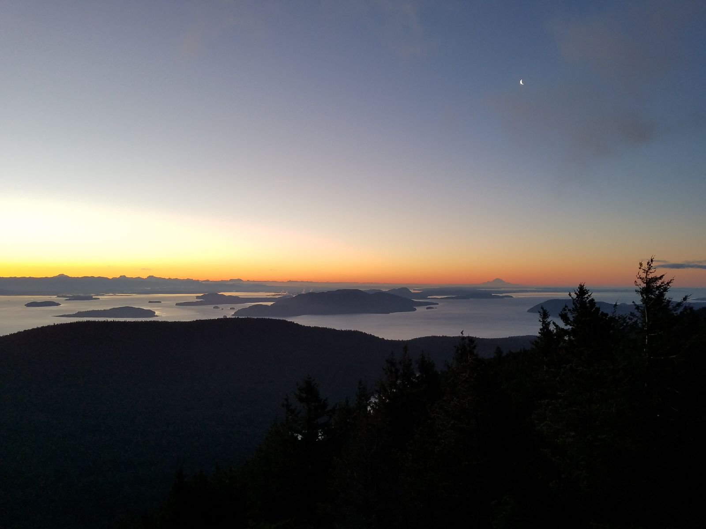
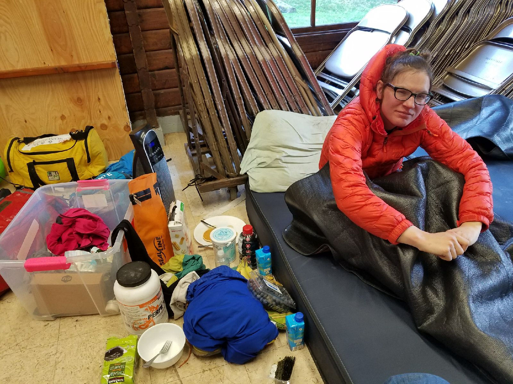

Race Report: Orcas Island 100, 2018
I run on trails a lot. Sometimes I run for 24-plus hours at a time. This blog is about the most recent race I ran.
Prologue
In early 2017, my significant other (he’ll be lurking in the background of this story quite a bit -- heretofore called Ben) moved to San Juan Island, Washington. A couple months later, I moved out there as well, and spent the spring and summer running on the trails and roads of the islands in the Haro Strait, including Orcas Island. Even though I technically live 1400 miles away, across seas and mountains, it feels like my backyard, hometown ultra. So I signed up without weighing (or honestly even realizing) factors like the 26,000 ft of elevation gain, the 14 hours of darkness, or the potential for winter weather.
Training
No one really wants to hear about this part. I ran a lot. For the most part, I felt really good. Then I felt a cold coming on the week before the race and consumed copious amounts of vitamin C and zinc to stave off the worst effects.
The Journey West
I flew out to Seattle Thursday morning and jumped in a van full of strangers to ride up to the ferry. (Thanks for the ride, runner Alex!) It was a gorgeous, sunny day, exactly the kind of day you don’t expect in the Pacific Northwest, so we kept nervously asking each other, “Will it last?” Spoiler: It did!
The ferry out to Orcas Island was populated with ultra runner tropes: Lots of trucker hats, race T-shirts, running shoes, beards, puffy jackets, buffs, etc. Never have I ever seen so many ultra runners on a ferry.
Island Nerves
We headed to Camp Moran, where we found a rustic lodge full of runners. Pre-race events make me nervous because you can smell all of the excitement and anxiety coming off all the other runners like steam off a pile of fresh dog poop in the snow. (And I mean this in the best possible way!)
Ben met me there for dinner...with our dogs! We took the dogs for a walk in the dark on some of the nearby trails (this is called foreshadowing -- there are more dark trails to come), then all piled into the back of our Volvo station wagon for a surprisingly good night’s sleep.
8 a.m. Friday: The Race Begins!
All you need to know about the race start is that there was a guy wearing an orca costume at the start. It was sunny and brisk (tights, headband and gloves weather).
What’s the Course Like?
The race is a 25-mile loop course (mostly on trails) that runners complete four times. For the first three miles or so, the course heads up a steep road that climbs nearly to the top of Mt. Constitution. My first time up Mt. Constitution road, I settled into a brisk power walk. It felt like I was going at a leisurely pace, but in retrospect it was way too fast. I feel in with a pack of runners who kept me company for the first 20 miles or so. (After that, we got spread out enough that I saw nearly no one on the course for the next 65 miles or so. You can add loneliness to the list of things that makes the Orcas 100 a wonderful and challenging race.)
After climbing 1500 ft on the road, the course headed down a steep (think: one missed step and you’ll be sliding on your butt) trail, where we lost all the elevation we just gained in about a mile. At the bottom of the descent, were are welcomed by the Mountain Lakes Aid Station. This aid station had incredible homemade sushi (mango/coconut and avocado). Yes!
The next section is a quite lovely flat single track jaunt around Mountain Lake. When I was feeling good, in loop 1, I could really move. When I was tired, in lap 3, it seemed a lot more rolling than flat...where did all these hills come from?
After passing by Twin Lakes (which are just what they sound like, two small lakes side-by-side), we had one of the toughest obstacles of the race: The trail turned into a bog. Luckily, some kind runners built a makeshift bridge out of logs. It was wobbly, but welcome.
Next, the climb up Mt. Pickett, which is a lovely, gentle climb on wide dirt trails and fire roads. I generally hate climbs, but I really loved this climb. It gave me an excuse to walk. Plus, there was bacon waiting on the other side of the hill at the Pickett Aid Station! One of the perks of a loop course is that you get to keep seeing the same incredible aid station folks over and over. A guy at Pickett kept telling me to catch up to all the men in front of me -- and that actually motivated me.
The descent from Pickett is glorious. Wide trails, steep enough to let you go fast without forcing you to put on the breaks and long enough to really get into a rhythm. Even when my legs were starting to protest, this section was a blast. At the bottom, the course crossed a stream by a waterfall, which was amazingly beautiful every time (even in the dark). Then it’s a short road stretch and on to the Cascade Lakes aid station.
Race directors have an odd affinity for powerline tracks, which typically eschew switchbacks and head straight up steep slopes. Voyageur, Canadian Death Race relay, Leadville...I’ve encountered many powerline sections in trail races, and the one at Orcas holds its own against all of them. I have little faith in my ability to compare them, though, because somehow the powerline climb at this race got steeper, longer and tougher each of the four times I completed it. Funny how that happens…
The powerline climb was truly tough, but also truly beautiful. During laps 3 and 4, the temperatures dropped below freezing and the muddy, saturated trail turned to a bed of flat, flaky ice crystals that shone in my light and made a really satisfying crunch as I hiked.
I also really love the reprieve we got after the powerline, where we got to descend back to near Twin Lakes before the final climb to the summit of Mt. Constitution. Also, the reward at the top is incredible: an aid station, a lookout tower, and an incredible view of the surrounding islands.
The final descent back to the start is where my weaknesses as a nighttime runner stood out: It’s loops and turns and steep stretches were insanely fun during the day and terrifying in the dark.
Here’s the map of the course, with the various checkpoints indicated and an elevation profile. This map was created for Rainshadow Running by Sean Harrasser/Wonderland Mapping.

Table of Loop Times
Here’s a table shows the split times for each full loop, as well as the splits for the segments within the loop. Each segment also includes day/night data. Note that, mileage wise, I spent about as much time in the daylight as in the dark. Timewise, however, I spent much more time in the dark. This is because I’m just generally slower running on trails by headlamp- and waist-lamp-light. Oh, also there’s that fatigue thing. However, note that loop 4 was faster than on loop 3, and the final (downhill) stretch to the finish was actually faster on loop 4 than on loops 2 or 3!
| Loop 1 | Loop 2 | Loop 3 | Loop 4 | |
|---|---|---|---|---|
| Total Loop Time | 5:15:48 (day) | 5:43:25 (day) | 6:57:05 (night) | 6:45:19 (night) |
| Start to Pickett | 1:54:58 (day) | 2:04:26 (day) | 2:29:28 (night) | 2:43:02 (night) |
| Pickett to Mt. Constitution | ?? (day) | 2:26:48 (day) | 3:04:13 (night) | 2:56:54 (night) |
| Mt. Constitution to Finish | ?? (day) | 1:12:11 (night) | 1:23:24 (night) | 1:05:23 (day) |
My final time was 24 hours, 41 minutes and TK seconds, and I was the first woman to finish (15th overall).
You can view the full race results at Ultrasignup and find more about the race from Rainshadow Running.
How'd I do?
I can genuinely say I had a lot of fun at this race, even though it was quite painful. I love running downhill, and this race offered me as much fast, runnable downhill as I could handle. My legs definitely paid the price, tightening up after the first 50 miles. I coerced Ben into giving me some quick massages (“Make me scream when you do my IT band!”), which helped me keep running. In the future, I should probably back some sort of self-massage-torture device in my drop bag.
Overall, my aid stations stops were quick, I was eating consistently, and I stayed positive (except for that one tearful moment at mile 90, where I just needed to get the, “I can’t do this it hurts so bad”s out of my system before moving on).
This was my sixth mountain 100-miler, and it was first one where I was genuinely racing it as opposed to just trying to finish. For me, it felt like a breakthrough. That said, I still made a few mistakes:
- Electrolytes: I went all-in on the electrolyte drink, then got burnt out on it and switched to straight water on lap 3, then started having to pee all the time, then switched back to electrolyte drink and was fine.
- Lighting: my superpower of being able to break electronics simply by touching them did not disappoint. When I put on my high-powered waist lamp, it immediately got stuck on dim mode. A friendly runner passed me, shuffling in the dark, and pulled my headlamp out of my pack for me. Thank you, swift night runner!
- Worrying too much about getting caught: As much as I tried to just run my race and my pace, I kept glancing behind me to see if there was a light on my tail. I wasted way too much mental energy worrying that someone was about to catch me.
- Taking pictures: No matter how many times I keep telling myself I’ll take more pictures when I run, I never do! I had my phone with me the entire fourth loop, to listen to music, but forgot that my phone also has a camera on it. Luckily, Ben caught a shot of sunrise on the climb up Mt. Constitution on Saturday morning.

The Aftermath
I pushed incredibly hard in this race, especially in the last loop. It felt great to be able to “sprint” it in (it’s all relative). My legs definitely paid the price for that fast last segment, though. The recovery from this race has involved a lot more collapsing into a human puddle than other races. Here’s a picture of me stuffing my face and getting warm at the finish line.
